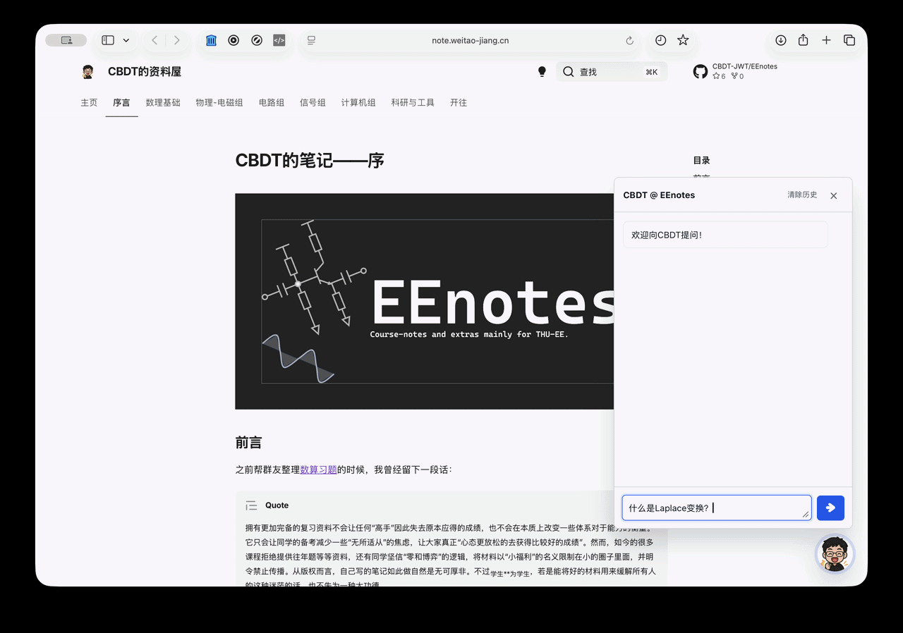

Agent 自主检索
模型自行决定检索词，可以多次搜索，并在无需检索时直接回答。

使用托管前端、连接自己的 API，并将后端安装到 /srv。
extra_css:
- https://cbdt-jwt.github.io/mkdocs-ai-chat/ai-chat.css
extra_javascript:
- js/mkdocs-ai-chat-config.js
- https://cbdt-jwt.github.io/mkdocs-ai-chat/ai-chat.jswindow.mkdocsAiChat = {
endpoint: "https://ai.example.com/api/chat",
title: "文档 AI",
welcome: "可以向我询问这份文档中的内容。",
placeholder: "输入你的问题...",
memoryTurns: 6,
clearLabel: "清除历史",
selectionActionLabel: "问问 AI"
};# Ubuntu / Debian
sudo apt-get install -y git python3 python3-venv
sudo mkdir -p /srv/mkdocs-ai-chat
sudo chown "$USER":"$USER" /srv/mkdocs-ai-chat
git clone https://github.com/CBDT-JWT/mkdocs-ai-chat.git \
/srv/mkdocs-ai-chat
cd /srv/mkdocs-ai-chat
cp .env.example .env
# 在 .env 中填写仓库、文档地址和 DeepSeek 密钥。
nano .env
bash scripts/install_service.sh前端保持轻巧，后端负责检索、上下文和来源质量。
模型自行决定检索词，可以多次搜索，并在无需检索时直接回答。
来源会跳到对应标题、保留文字高亮，并在悬停时预览 Markdown 和公式。
标题、表格、代码、引用、分割线和 LaTeX 都能在流式回答过程中渲染。
多轮历史保存在 localStorage 中，刷新后恢复，并且可在回答过程中清除。
面板在手机上变为全屏工作区，适配虚拟键盘、安全区域和稳定触控目标。